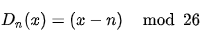
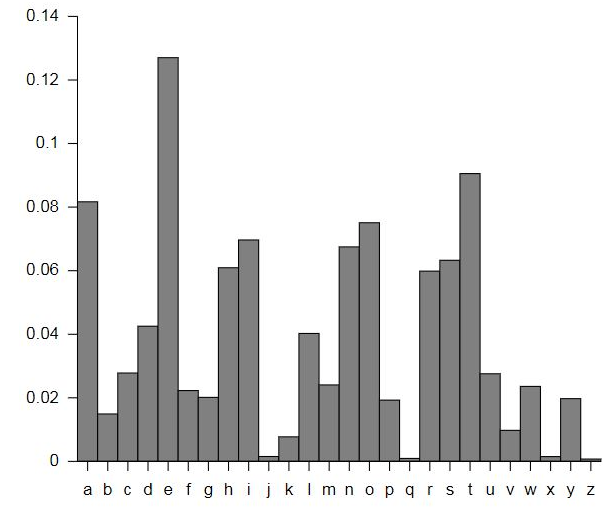

Cryptography In The Digital Era
What will we eat in 30 years?

Overview
This article covers different cryptographic techniques that ensure data confidentiality, integrity and availability.
1.1 Computer Security
Computer Security refers to the security of a computer system and important information from unauthorized access and
theft.
Three main objectives of Computer Security are as follows:
1.1.1 Confidentiality
1.1.2 Integrity
1.1.3 Availability
1.1.1 Confidentiality
It ensures that unauthorized persons are not able to access important and private information. The two main concerns
in this process is secrecy and privacy.
Privacy ensures that an individual’s information will be disclosed to only those to whom the individual has
given the specific access to obtain that information.
The technique used for this purpose is Encryption. Let's take a basic example to get to know about Encryption.
Suppose you have the word “Hello”, the technique used is that you replace every character of the word
with some character, in this way the information you want to transmit to the other end becomes meaningless and any
intruder cannot access the information. The receiver will use the same technique to replace those characters with
the original character in this way the information again becomes accessible.
1.1.2
Integrity
It ensures that data can only be modified by authorized individuals and those who don’t have access will not
be able to modify the data.
The technique used for this purpose is hashing. There are multiple hash calculators available.
For example Microsoft File Checksum Integrity Verifier uses two hashing algorithms, md5 and sha1. Using this hash
calculator, the hash code of the information is created and the receiver end will match the hash code of the file
on his end with the original hash code, in order to make sure that the integrity of data has been maintained.
1.1.3
Availability
The main objective of this is so that the data remains available all the time when it is needed. The service is denied
to those who have authorized access.
There are multiple reasons that affect the availability of data, one of them is the DOS attack. That makes the service
to be denied for authorized users.
These three objectives are referred to as CIA Triad (Confidentiality, Integrity, Availability).
Classical Encryption Techniques
2.1 Basic Terms and Terminologies
Plain Text
The meaningful information that is to be processed to make it secure is called plain text.
Cipher Text
The coded message that is meaningless is called cipher text.
Encryption
The process of converting the meaningful information into a meaningless coded message is called encryption or enciphering.
Decryption
The process of retrieving the plain text in the form of meaningful information from meaningless ciphertext is called
decryption or deciphering.
Cryptography
The area that focuses on these encryption and decryption scenarios is called Cryptography and such a system is called
a Cipher.
2.2 Requirements for Secure Encryption
Strong Encryption Algorithm
The first requirement for a secure encryption algorithm is that the algorithm we have chosen for encryption should
be strong enough so that if any intruder or attacker who even knows the encryption algorithm or has access to one
of ciphertexts wouldn’t be able to figure out the key and not be able to decrypt the ciphertext.
Secret Key
It is necessary for the sender and the receiver to have the copies of the secret key in a protected way so that it
remains private in between both the individuals. If somehow a third party knows about the secret key then the information
won’t remain confidential.
2.3 Cryptographic Systems
Cryptographic Systems are divided into three main regions,
2.3.1 Nature of Operations used
Each encryption the algorithm is based upon two methods, substitution and transposition. In substitution , the mapping
of elements in such a way that each element in plaintext is substituted to another element whereas in the case of
transposition, the plaintext elements are rearranged with each other.
2.3.2 Number of Keys
If both the parties use the same key for encryption and decryption process, then it is called symmetric, single key
or conventional encryption. If both parties use different keys for encryption and decryption process then it is called
asymmetric, or public-key encryption.
2.3.3 Way of Processing Plaintext
There are two methods for processing plaintext. One is a block cipher in which the plaintext is processed block by
block and the other one is a stream cipher where the text is processed bit by bit.
2.3 Symmetric Ciphers
Symmetric Ciphers are a form of cryptosystems where encryption-decryption is done based on the same key and it is
also known as Single Key Cryptography. It is a conventional cryptosystem which is used in Data Encryption Standard(DES)
and Advance Encryption Standard(AES).
2.4 Substitution Techniques
2.4.1 Caesar Cipher
This is the most common and simplest kind of substitution cipher in which each letter of the alphabet is replaced
with some other letter with fixed positions down the alphabet. For example, with a shift of +3, the letter D will
be replaced with G.
For Encryption,
Where x is the letter and n is the number of places to shift.

For Decryption

2.4.2 Monoalphabetic Cipher
A monoalphabetic cipher is a type of substitution cipher where each letter of the alphabet is replaced with some other
letter. In this technique there are 26! Possible keys.
For example, if we substitute a letter “a” with a letter with “D” so when we have the letter
“a” in our message then we are going to replace it with “D”
2.4.3 Frequency Analysis
This technique is used to study the frequency of letters in a cipher text in order to retrieve the plain text.
All English alphabets have varying occurrences thus having varying frequencies. Having the knowledge of the frequency
of these English alphabets, if the encryption algorithm is not fully applied then it is able to figure out the plain
text by just looking at the ciphertext.
Below is the frequency distribution of English alphabets:

2.4.4 Affine Cipher
A type of monoalphabetic cipher in which each letter of the corresponding alphabet is replaced to a numeric equivalent
which is encrypted through a mathematical formula. In this way, a letter can be encrypted and can be converted to
that letter during decryption.
This whole method works on module m. The key of affine cipher contains two numbers, consider them as “a”
and “b”. Suppose 26 letters are placed in an array and their indexes are given as follows which will
be used for encryption and decryption.

For Encryption
E(x) = (ax+b) mod m
Where a & b are the key to the cipher and “a” and “m” must be coprime.
For Decryption
D(x) = a
-1 (x-b) mod m
Where a
-1 is the multiplicative inverse of a modulo m.
For Example,

Polyalphabetic Ciphers
A polyalphabetic cipher is a type of substitution cipher that uses multiple alphabets substitution. There are multiple
Polyalphabetic Ciphers which are as follows,
- Vigenere Cipher
- AutoKey Cipher
2.5.1 Vigenere Cipher
It uses a 26*26 table of alphabets where each alphabet is cyclically shifted to the left. This table is also known
as Vigenere Table. It also uses a keyword, that is repeated in such a way that it get equals to that of the plaintext
to form the key.
Suppose we have a keyword “STUDENT” and plaintext is BEGINNERS GUIDE TO CYBERSECURITY
PlainText: BEGINNERSGUIDETOCYBERSECURITY
Key: STUDENTSTUDENTSTUDENTSTUDENT

Vigenere Table (fig)
2.5.2 Auto Key Cipher
AutoKey Cipher is similar to vigenere cipher, the difference is that instead of repeating the keyword to match the
length of the plaintext, the keyword is prefixed to the plaintext and not repeated.
Taking the previous example,
Plaintext: BEGINNERSGUIDETOCYBERSECURITY
Key: SUDENTBEGINNERSGUIDETOCYBERS
Cryptanalysis
3.1 Introduction
Cryptanalysis deals with the study of cryptosystems, ciphers and ciphertexts with the objective of getting knowledge
about the functioning of the specific cryptosystem and finding the ways the cryptosystem can break and how the security
can be compromised.
For example, a cryptanalyst tries to break the ciphertext without knowing which encryption algorithm has been used,
and what's the plain text and the key used for enciphering the plaintext.
3.2 Classification of Cryptanalysis Attacks
Depending upon the knowledge of the cryptanalyst and the information he has about the ciphertext, there are multiple
cryptanalysis attacks and techniques which are as follows:
3.2.1 Ciphertext-only Attack
In this attack, the attacker can obtain only one or more encrypted message, but he doesn’t know anything about
the underlying encryption algorithm, plaintext and the key is used for encrypting the message.
3.2.2 Known Plaintext Attack
In this attack, the attacker has access to some or part of the plaintext and the only thing the attacker has to do
is to figure out the key that was used to encrypt the message.
Once the attacker figures out the key , then he can decrypt all the messages and information will be compromised.
3.2.3 Chosen Plaintext Attack
In this attack, the attacker has knowledge about the encryption algorithm being used for the encryption process and
in this way the attacker can use this algorithm to encrypt the chosen plaintext to figure out the key used in encrypting
messages.
3.2.4 Man-in-the-middle Attack
In this the attack, the attacker somehow finds a way of getting in between the communication the channel between two
parties who uses public-key cryptography to exchange keys with each other in a secure way. The attacker sends exchanged
key to both of the parties and the parties consider it as an original key.In the end, both parties use keys specified
by the attacker.
Block Ciphers and Data Encryption Standards
A block cipher uses a technique in which a block of plaintext is taken and then it produces a ciphertext of equal
length of that of the block. Usually, the available block sizes are 64 bit and 128 bit.
4.1 Feistel Cipher Structure
To implement block ciphers, a structure is used that is known as Feistel Cipher Structure. It can have reversible,
irreversible, and self-reversible components in its structure.
Different keys are used for each round but matching keys are used for the encryption and decryption process.
- The input block of plaintext is divided into two halves which are represented as Left half(L) and right half( R).
- In every round, the right half remains as it is whereas the left half depends on the right half and an encrypting function.
- Instead of using the same encryption key in each round, a different key is used in each round. These subkeys are somehow related to the original key.
- At the end of this step , the permutation is applied which permutes the L and R in such a way that R of previous round that is unmodified would be the L of the next round and output of L of previous would be the R of next round.
- Once all the rounds are completed, the result of L and R block are concatenated to form the Ciphertext block.
4.2 Data Encryption Standard(DES)
Implementation of Feistel Structure is found in Data Encryption Standard(DES). It consists of 16 rounds having a block
size of 64 bits. It has an effective key length of 56 bits and 8 of the 64 bits are parity bits hence they are not
used for encryption purposes.

DES algorithm works on 64 bits of the input block. These 64 bits are then grouped to two halves, a right half and
left half, having 32 bits each. Similar operations are performed on 16 rounds having 16 different keys for each round
of 48bit.

The function f takes input R of 32 bits and key of 48 bits. These are passed through an expansion box E which expands
the bits from 32 to 48. These expanded bits are then XORed with the 48-bit key. The result of this operation acts
as an input for the Substitution process. It contains 8 S-boxes which can take input of 6 bits and produce an output
of 4 bit and in total, we have 32 substituted bits and these 32 bits are then permuted by the P-box. Ther result
of the P-box is XORed with L to get the final of function f.
Basic Concepts in Number Theory and Finite Fields
5.1 Modular Arithmetic
If we have an integer “a” and positive integer “b” then “a mod b” is termed as
the remainder when a is divided by b.
For example,
12 mod 5 =2
The process of performing arithmetic operations using ( mod n ) operator is known as Modular Arithmetic.
5.2 Euclidean Algorithm
For a process of finding the greatest common divisor of two positive integers, a technique is used which is known
as the Euclidean Algorithm. It is based on the following two facts,
Gcd(x,0)=x
Gcd(x,y)=gcd(y,r) where is the mod of x and y
5.3 Extended Euclidean Algorithm
It is an extension of the Euclidean Algorithm that in addition to calculating the greatest common divisor also calculates
two additional integers x and y to be used in the equation.
Public Key Cryptography and RSA
6.1 Asymmetric Encryption
It is a form of cryptosystem in which encryption and decryption are performed using different keys. Either of the
processes can use a public key and the other uses a private key, also called public-key encryption.
During the encryption process, it uses either of the two keys and an encryption algorithm. During the decryption process,
it uses the paired key and decryption algorithm to retrieve the plaintext.
It is to ensure confidentiality and authenticity. The most common cryptosystem is RSA.
6.2 Necessary Steps for Public Key Cryptography

Following are the necessary steps that are required for public-key cryptography,
- For encryption and decryption process, every user produces a pair of keys.
- One of the keys is placed publicly that remains accessible whereas the other key is kept private.
- If user A wants to send a secret message to user B, then the public key of User B is used by the user A for the encryption part.
- Using the private key of the user B, the message is retrieved by user B, and because user B has the private key so no other recipient is able to decrypt that message.
6.3 RSA Algorithm
This algorithm is used to encrypt a message without exchanging the secret key separately.
The following steps required to perform RSA Algorithm,
Step 1:RSA Modulus Generation
This process starts by selecting two prime numbers named as p and q.After that their product is calculated
N=p*q
Step 2:Derived Number
Condition is applied that (p-1) and (q-1) will have no common factor. The derived number will be less than (p-1),(q-1)
and greater than 1.
Step 3: Public Key
RSA public key is formed by the specific pair of e and n and it is made public.
Step 4: Private Key
The private key is calculated from the following formula,
For Encryption,
Plaintext M<n
Cipher Text C=M
e mod n
For Decryption,
Ciphertext C
Plaintext M = C
d mod n
Key Management and Distribution
7.1 Key Distribution
This process is to ensure the successful delivery of a key between two parties who want to exchange encrypted data.
For the secure distribution of data, protocols need to be followed.
7.2 Distribution of Public Keys
Techniques used for public key distribution are as follows:
- Public Announcement
- Publicly Available Directory
- Public-key Authority
- Public-key Certificates
7.2.1 Public Announcement
As we are discussing public key encryption, then it needs a key that can be broadcasted in such a way that is publicly
available in the a community such as in RSA algorithm when user A can use the public key of user B to encrypt a message.
But it also has some weakness, suppose there is an intruder who pretends to be user A and broadcast a public key.
The intruder will be able to read the messages until that real user A makes alert other users.
7.2.2 Publicly Available Directory
To ensure the security of public keys such that no intruder can pretend to be some user A, there can be a public organization
also known as a dynamic directory which will make sure the organization remains secure and trusted.
It has the following objectives,
- The record of each participant is maintained in the directory by the authority.
- Every participant has to use a secured communication medium to register his public key with the authority.
- A participant has the option to change the public key at any time in the directory. There can be multiple reasons for this like the old public key has been used for many large amounts of data or the private key that is associated with the public key has been compromised.
7.2.3 Public-key Authority
For secured public key distribution, there should be some protocols be followed for the protected distribution of
public keys from the directory. Every participant is aware of a public key for the authority and only authority has
access to the associated private key.
7.2.4 Public-key Certificates
In this approach, parties can use certificates for exchanging public-key without the involvement of authority and
it is as secure as the keys were given by the public-key authority.
A certificate consists of three main components, a public key, to keep a record of the owner an the identifier is
used and a block on which third party has signed.
It has the following objectives,
- To check the public key of certificate’s owner and name, every participant can have the access to read the certificate.
- Each user has the option to check the originality of the certificate issued by the certificate authority.
- Modification can be made only by the certificate authority.
Conclusion
Information Security involves preventing or at least reducing the probability of unauthorized/inappropriate access
to data, or the unlawful use,
disclosure, disruption, deletion, corruption, modification, inspection, recording or devaluation of information.